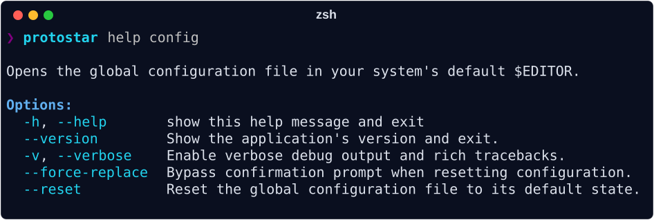

Global Configuration¶
Your global configuration file acts as the baseline defaults for environment initialization (which can be overridden by templates or CLI flags). Open it in your system's default $EDITOR by running:

To restore your configuration to the factory defaults:
To bypass the confirmation prompt (e.g., in automated scripts), append --force-replace:
The Default Baseline¶
When you first run protostar config a configuration file is created and opened at ~/.config/protostar/config.toml:
[env]
# Preferred IDE: 'vscode', 'cursor', or 'none'
# ide = "vscode"
# Default Author Information
# author_name = "your-name"
# author_email = "your-email"
# github_username = "your-github-username"
# Default Python version
python_version = "3.13"
# supported_os = ["MacOS", "Linux", "Windows"]
# Optional dev tool toggles for Python
# direnv = true # Scaffold .envrc and auto-activate virtual environments
# markdownlint = true # Scaffold MarkdownLint configuration and hooks
# rumdl = true # Scaffold rumdl fast markdown linter and formatter
# ruff = false # Disable default Ruff linter and formatter scaffolding
# mypy = true # Scaffold Mypy static type checker
# ty = true # Scaffold Astral ty type checker
# pyrefly = true # Scaffold Pyrefly static type checker
# pytest = true # Scaffold Pytest testing framework
# pre_commit = true # Scaffold pre-commit git hooks and configuration
# prek = true # Scaffold prek git hooks (faster Rust alternative to pre-commit)
# commitizen = true # Scaffold Commitizen version bumping and changelog tooling
# renovate = true # Scaffold Renovate dependency update configuration
# codecov = true # Scaffold Codecov configuration
# zensical = true # Scaffold Zensical documentation
# readthedocs = true # Scaffold Read the Docs configuration
# ci = true # Scaffold standard GitHub Actions CI workflows
# release = true # Scaffold GitHub Actions PyPI release workflows
# just = true # Scaffold a justfile for command execution
# [templates]
# my-org-api = "https://raw.githubusercontent.com/MyOrg/standards/main/api.toml"
# data-science-base = "~/Developer/templates/ds_base.toml"
Configuration Reference¶
Environment Settings ([env])¶
Controls base environment toggles and global tool preferences applied whenever protostar init is executed:
| Setting | Type | Description |
|---|---|---|
ide |
"vscode" | "cursor" | "none" |
The preferred IDE (e.g., 'vscode', 'cursor', 'none'). |
author_name |
str | None |
Default author name for project metadata. |
author_email |
str | None |
Default author email for project metadata. |
github_username |
str | None |
Default GitHub username for repository URL formatting. |
direnv |
bool |
Whether to auto-scaffold .envrc shell bindings. |
python_version |
str | None |
The specific Python version to scaffold. |
license |
str | None |
Default project license identifier (e.g., 'MIT', 'Apache-2.0'). |
supported_os |
list[str] |
The supported operating systems to scaffold CI for. |
markdownlint |
bool |
Whether to auto-scaffold MarkdownLint configs. |
rumdl |
bool |
Whether to auto-scaffold rumdl fast markdown linter and formatter. |
ruff |
bool |
Whether to auto-scaffold Ruff dependencies and configs. |
mypy |
bool |
Whether to auto-scaffold Mypy dependencies and configs. |
ty |
bool |
Whether to auto-scaffold Astral ty type checker. |
pyrefly |
bool |
Whether to auto-scaffold Pyrefly type checker. |
pytest |
bool |
Whether to auto-scaffold Pytest dependencies and configs. |
pre_commit |
bool |
Whether to auto-scaffold pre-commit hooks. |
prek |
bool |
Whether to auto-scaffold prek git hooks. |
commitizen |
bool |
Whether to auto-scaffold commitizen version bumping and changelog tooling. |
renovate |
bool |
Whether to auto-scaffold Renovate dependency update configuration. |
codecov |
bool |
Whether to auto-scaffold Codecov configuration. |
zensical |
bool |
Whether to auto-scaffold Zensical documentation. |
readthedocs |
bool |
Whether to auto-scaffold Read the Docs configuration. |
ci |
bool |
Whether to auto-scaffold standard GitHub Actions CI workflows. |
release |
bool |
Whether to auto-scaffold GitHub Actions PyPI release workflows. |
just |
bool |
Whether to auto-scaffold a justfile for command execution. |
Supported Licenses¶
When configuring license in [env], Protostar injects the full license file and attaches the official PyPI Trove classifier to pyproject.toml:
| License Identifier | License File | PyPI Trove Classifier |
|---|---|---|
MIT |
mit.txt |
License :: OSI Approved :: MIT License |
Apache-2.0 |
apache_2_0.txt |
License :: OSI Approved :: Apache Software License |
BSD-3-Clause |
bsd_3.txt |
License :: OSI Approved :: BSD License |
GPL-3.0 |
gpl_3.txt |
License :: OSI Approved :: GNU General Public License v3 (GPLv3) |
LGPL-3.0 |
lgpl_3.txt |
License :: OSI Approved :: GNU Lesser General Public License v3 (LGPLv3) |
AGPL-3.0 |
agpl_3.txt |
License :: OSI Approved :: GNU Affero General Public License v3 |
Global Template Aliases ([templates])¶
Map friendly shorthand names to local files or remote URLs:
[templates]
my-org-api = "https://raw.githubusercontent.com/MyOrg/standards/main/api.toml"
data-science = "~/Developer/templates/ds_base.toml"
Templates declared here can be invoked directly with protostar init --template my-org-api, appear automatically in the interactive wizard, and bypass the remote trust warning dialog.
Next Steps¶
- Environment Initialization: Test your configured global defaults with
protostar init. - Templates & Portable Configurations: Discover how template aliases streamline custom template consumption and bypass remote security prompts.
- CLI Reference: Review all command-line options and runtime flag overrides.